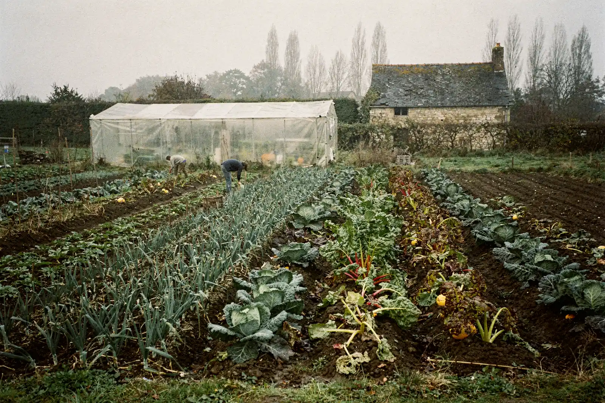

Gîtes du Bocage
Maisons de ferme rénovées, potager en libre-service, à 25 minutes de Nantes. Démo : textes fictifs.
La recherche reste dans le hero : sur téléphone, les champs s’empilent et le bouton prend toute la largeur.